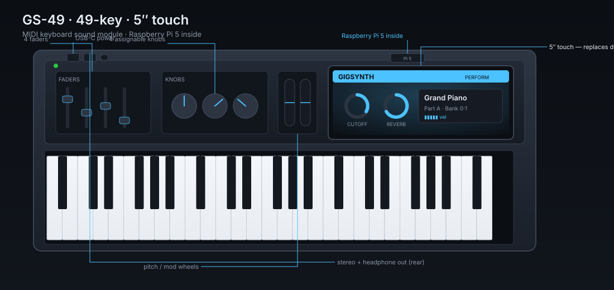
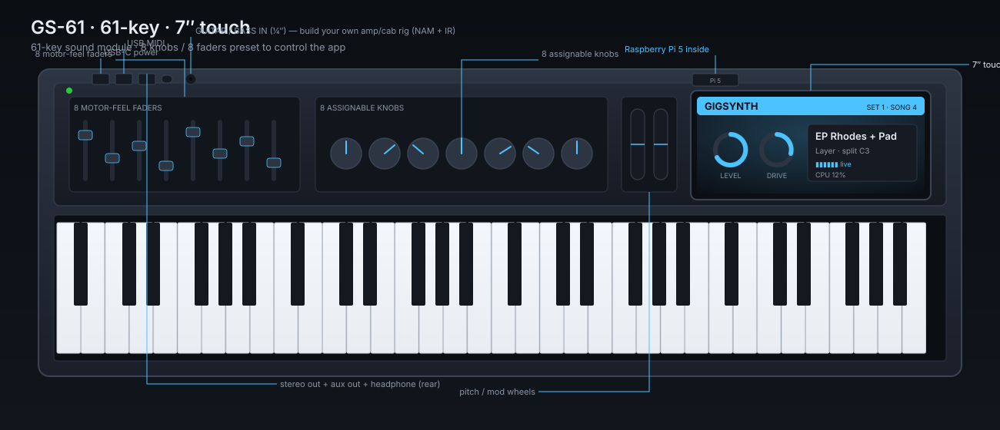
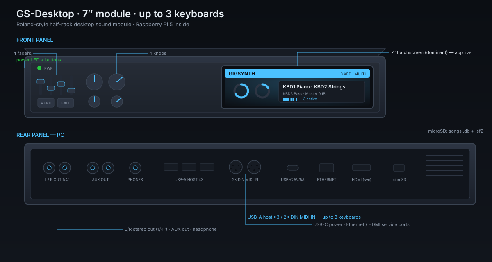
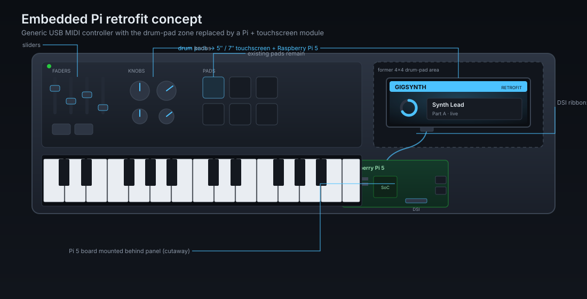
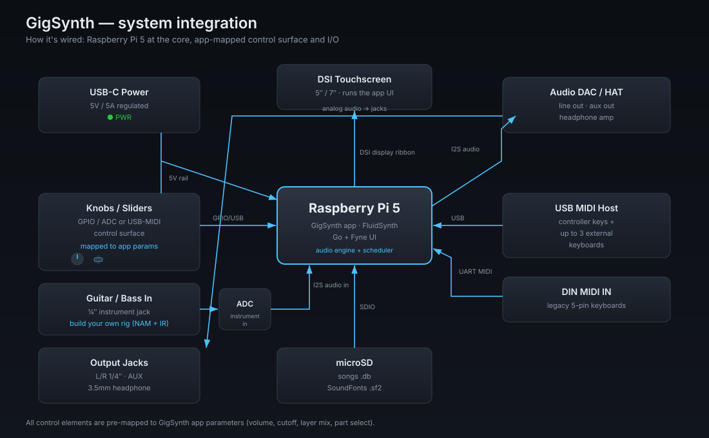

LineupGS-49GS-61 GS-DesktopEmbedded concept How it's builtNew software BOM & pricingPlan changes
The lineup
Three instruments, one app. Every model runs the same GigSynth software and the same songs/Parts library — the difference is the body, the screen size, and how many keyboards it drives.
GS-49
49 keys · 5″ touch · 4 knobs + 4 sliders
The grab-and-go gig keyboard. Stereo line out + headphone out, Pi 5 (4 GB) inside, app on a 5″ screen where the drum pads used to be.
GS-61
61 keys · 7″ touch · 8 knobs + 8 sliders
The flagship. A big 7″ touch surface, a full 8+8 control set mapped to the mixer and FX, Pi 5 (8 GB), stereo + aux out.
GS-Desktop
No keys · 7″ touch · drives 3 keyboards
A Roland-style sound module: bring your own controllers. Hosts up to three keyboards (USB + DIN MIDI), stereo + aux out, 7″ front-panel UI.
GS-49 — 49-key · 5″ touch

The 4 knobs and 4 sliders are pre-mapped to the app: faders to the four layer volumes, knobs to pan and the headline FX parameters. Everything a Part stores — sounds, mix, splits, FX — recalls with one button. Donor reference: a Nektar Impact GX49-class controller.
GS-61 — 61-key · 7″ touch

GS-Desktop — 7″ module, up to 3 keyboards

For players who already own controllers: the GS-Desktop is the brain on its own. It maps to the same three-keyboard Live view as the software, so a main keyboard, a bass split, and a pad controller all route independently into one stereo + aux output.
The embedded-Pi concept

How it's built

.db + .sf2), a 5 V/5 A USB-C supply, and the
knob/slider control surface mapped to the app over USB-MIDI / GPIO.New in the software v0+
The instruments ship with three new app capabilities (all built test-first; see plan changes):
Two new effects — Phaser & Flanger

Realtime MIDI + audio recording

 on the Live top bar).
on the Live top bar).BOM & pricing (est.)
All-in unit cost = hardware subtotal + assembly/test/packaging. Assembled MSRP is set at ~2.2–2.6× all-in, tiered across the line. Full line-item BOM: products/bom.md.
| Product | Hardware subtotal | Assembly | All-in cost | Kit / DIY | Assembled MSRP |
|---|---|---|---|---|---|
| GS-49 | $364 (est.) | $30 (est.) | $394 (est.) | $320 (est.) | $899 (est.) |
| GS-Desktop | $426 (est.) | $40 (est.) | $466 (est.) | $380 (est.) | $1,149 (est.) |
| GS-61 | $459 (est.) | $45 (est.) | $504 (est.) | $410 (est.) | $1,199 (est.) |
Changes needed on top of the current plan
Relative to the original shipped plan.json (18 stories / 25 tests), the product line
added seven stories — all implemented and green:
| Story | Scope | Status |
|---|---|---|
| S19 — Per-keyboard Phaser | 4-stage all-pass phaser node (Rate/Depth/Feedback), wired into fx.Chain,
controller, and per-Part DB persistence. | DONE · green |
| S20 — Per-keyboard Flanger | Short swept-delay flanger (Rate/Depth/Feedback/Mix), same end-to-end wiring + persistence. | DONE · green |
| S21 — MIDI + audio recording | New internal/recording package (Recorder/Store/Player), Live REC toggle, and a
Recordings view; controller taps the MIDI path. |
DONE · green |
| S22 — Pi provisioning | Embedded systemd unit + install script rendered per model via gigsynth -provision;
see provisioning. | DONE · green |
| S23 — Onboard control-surface mapping | Factory midimap presets (GS-49/GS-61/GS-Desktop) binding the knobs/sliders to
mix + the full four-effect chain, incl. Phaser/Flanger CCs. | DONE · green |
| S24 — Audio capture + WAV export | Pure-Go PCM16 WAV encoder; takes retain samples and export to .wav. The live
engine→CaptureAudio driver tap is the one remaining hardware-bound step. |
DONE · green |
| S25 — Phaser/Flanger on small screens | The 7″ (touch7) and Pi Zero layouts now surface/bank the Phaser and Flanger, not just the desktop. | DONE · green |
Summary after the implemented work: 25 stories / 35 tests, all green. The only deferred
item is the live audio-driver callback feeding CaptureAudio on real hardware (S24).